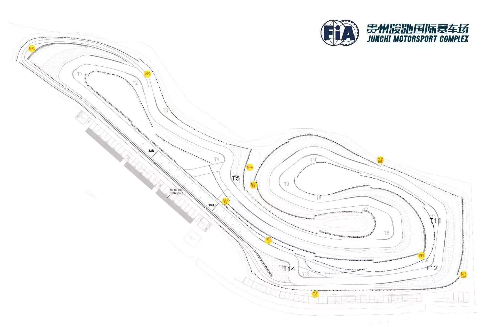
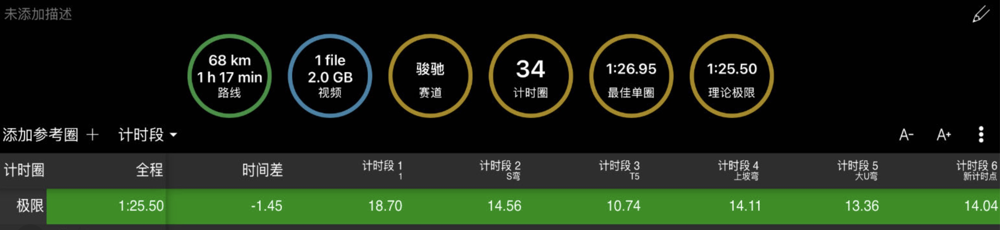
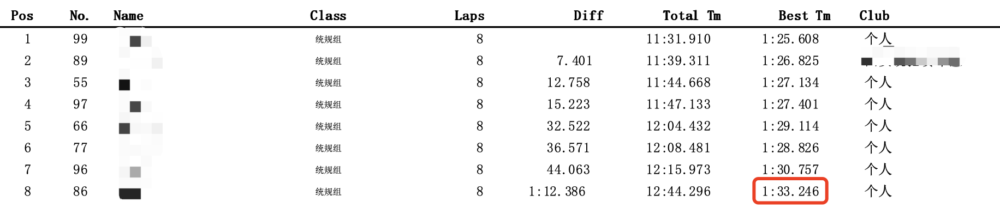
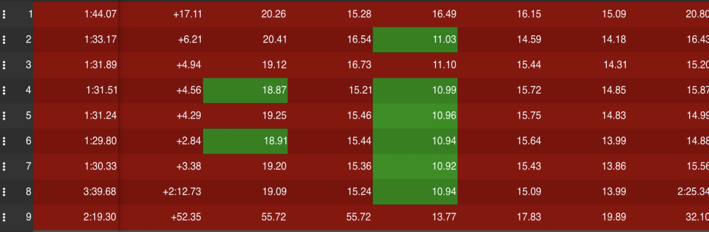
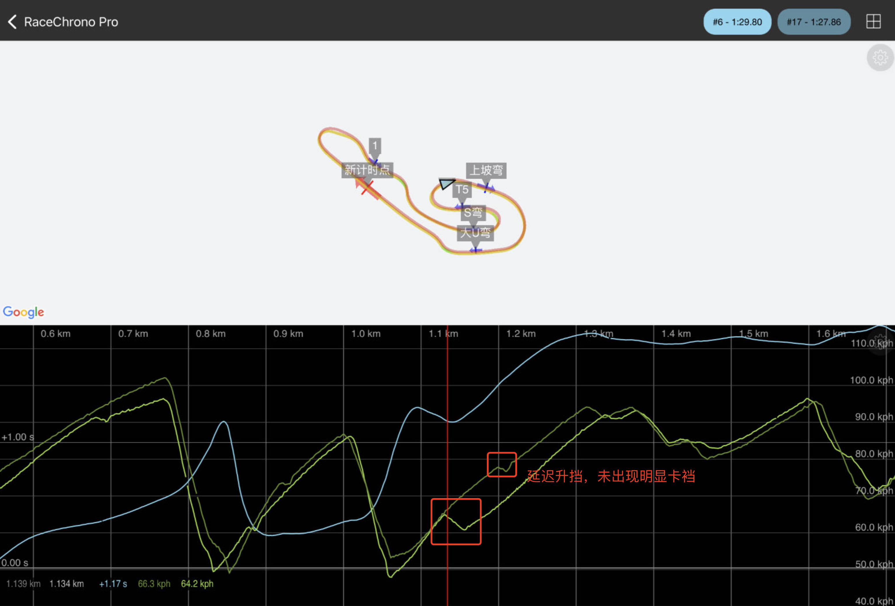
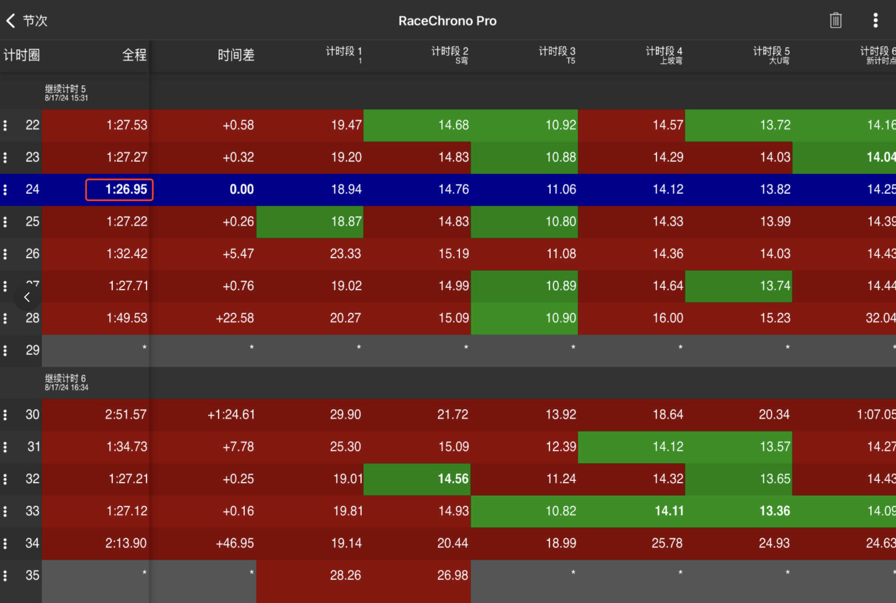

赛车记

先说结论：第一次下赛道，第一次跑比赛，最佳单圈：1:26:95，理论最佳单圈：1:25:50，排名第4，与领奖台插肩而过  一直以来比较喜欢驾驶，比较喜欢开车，模拟器跑过一些，前不久，终于报名，参加了自己人生中的第一场赛车比赛。本不打算写点什么，想了想，怕自己忘记，还是打算把一些感悟记录下来。 其实是参加了两场，第一场车有问题，即便我是第一次下赛道，第一次跑比赛，我也非常确定的是，我的成绩也不可能那么差。从练习赛开始，别人就都是越来越快，只有我是越来越慢，自己当时并未觉察异常，以为是初次跑赛车的我自己的问题，直到后面才意识到是车的问题，无奈运气也是实力的一部分，而且比赛也已经跑完。  带着这种不甘，参加了第二场，只为了证明自己不可能这么慢，自己预测如果车没问题，自己可以跑进1分28，车的问题至少让我慢了5秒。为此，还专门购买了数据记录设备RaceBox，配合软件RaceChrononPro，可以方便的查看log数据，知道自己快在哪，慢在哪，不至于像第一场那样盲跑。 第二场赛车抽签不再是86号车，而是89号车，这次车动力正常了很多，但这次车没有了ABS，刹车不小心就会爆死，且在T10上坡弯，2升3会卡裆，即便如此，上午的官方练习，也能跑进1:30s。 
中午休息，和举办方确定车是新换的刹车油与刹车片，就是会踩爆死。 下午赛车分为一节排位赛，两回合正赛。排位逐渐适应了刹车，能精确的控制轮胎刚好不爆死，发挥最大摩擦力，做好循迹刹车，在T10上坡弯，延迟升挡（中午与赛道老鸟交流），果然排位晒越跑越好，加之有RaceChrononPro实时显示数据，节奏也很好，最终配位最快圈速，1:27:86，达到自己的预期，排位第三。查看日志可以看到，排位赛最快圈（#17）在回头上坡弯采用延时升挡，卡裆情况得到缓解，秒差瞬间拉开。 
两回合正赛，再次刷新自己最快单圈，最快成绩1:26:95，这成绩放在第一场，都可以上领奖台了  这里是第二回合的部分车载视频，没能记录下最快圈
自我总结：
- 跑比赛必须要有实时log记录，不然就是盲跑，很难提升成绩；
- 对速度要有敬畏之心，上午练习赛时，最开始有过几次失控，救了回来，后面放松警惕，导致错过刹车点，上墙！！！没错，我在上午练习赛中上墙了（#8）；
- 对于这条赛道来说，3个低速弯，T1、T6+T7、T9+T10，T1和T9+T10都是回头上坡弯，这种小马力车很难做到交叉线超车，动力太弱，不能形成足够的速度差，这两处最好的办法是守住内心；唯一的机会在T6+T7，若保持好自己节奏，应该能在此处超车；
- 第一次下赛道，第一次跑比赛，经验不足，受前车影响太大，线路、刹车点、开油点都被影响，导致最终没有超车。不管前车怎么跑，在没法进攻时，应走自己的赛车线，跑自己的节奏；在逼近时，也应尽量少的受其影响，看准时机，果断超车；